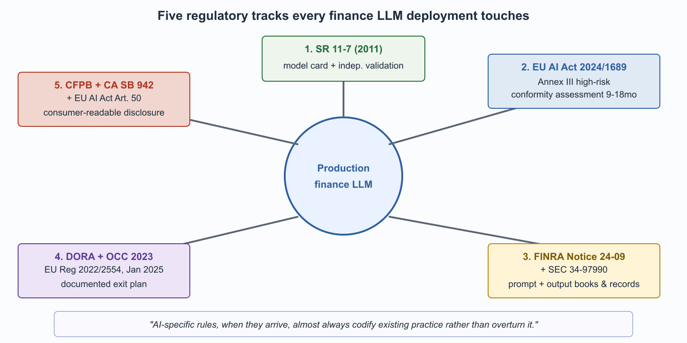

"SR 11-7, DORA, FINRA, EU AI Act. Four acronyms, one shared message: document everything, especially what your LLM cannot do."
Compass, Reg-Acronym-Pedant AI Agent
Five regulatory tracks shape financial LLM deployments in 2026: model risk management, EU AI Act high-risk classification, FINRA and SEC supervision, operational resilience, and consumer-protection disclosure. Any production deployment touches at least three; many touch all five. The regulators have moved faster on guidance than on enforcement, which has given firms some room to deploy carefully without immediate examination risk. That window is closing: OCC, CFPB, SEC, and FINRA have all signaled in 2024 and 2025 that enforcement priorities are shifting from "are you using AI?" to "are your AI deployments documented under your existing risk-management framework?" This section maps each regulatory track to the deployment patterns that satisfy it.

Prerequisites
This section assumes the finance LLM failure modes from Section 68.2, the LLM-policy vocabulary from Section 55.1, and the model-card and audit-log patterns from Section 54.6.
SR 11-7 Model Risk Management
SR 11-7 was published by the Federal Reserve in April 2011 in response to the 2008 financial crisis, which traced part of its origin to misuse of credit-risk models. The guidance was authored largely by an OCC team led by a former insurance-actuarial regulator who reportedly insisted on the phrase "effective challenge" appearing in the document at least once; it now appears 23 times.
Any model that informs a financial decision is in scope. The Federal Reserve's SR 11-7 model risk management guidance (2011, joint with OCC) is the dominant U.S. framework. It predates LLMs by more than a decade but its definition of "model" is broad enough that LLMs deployed in regulated banks are unambiguously in scope. The framework requires documentation of model design and intended use, independent validation, ongoing monitoring, and clear governance of who owns the model and who can change it. For LLMs the practical implication is that every production deployment needs a model card, an evaluation report, a designated model owner, and a documented review cadence. Equivalents exist in other jurisdictions: PRA SS3/18 in the U.K., EBA guidelines in the EU, and OSFI E-23 in Canada.
EU AI Act High-Risk Classification
LLMs used in creditworthiness, life and health insurance pricing, and recruitment for financial services are high-risk under the EU AI Act; conformity assessment required. (See Section 53.2.) The classification triggers obligations that resemble medical-device conformity: documented risk management, data governance for training and validation, technical documentation, automated logging, human oversight, and post-market monitoring. The conformity assessment typically takes 9 to 18 months for a new vendor; most U.S. LLM providers entered the regulated EU finance market later than their commercial market entry because the conformity-assessment lead time is real.
FINRA and SEC Supervision Rules
Recordkeeping requirements for client-facing communications include LLM-generated content. Books and records must include the prompts, retrieved context, and model outputs. FINRA Regulatory Notice 24-09 made this explicit for broker-dealer firms in 2024, addressing supervision of AI-generated communications under Rule 3110 and recordkeeping under Rule 4511. The SEC's proposed rule on conflicts of interest in predictive data analytics (Release 34-97990, 2023) is the parallel framework for investment advisers; the conflict analysis applies to LLM-driven recommendation systems and the rule remains under consideration as of mid-2026.
Operational Resilience: DORA and OCC Third-Party Guidance
Third-party LLM providers are now treated as critical third-party service providers, with associated due-diligence and exit-plan requirements. The EU Digital Operational Resilience Act (DORA), effective January 2025, imposes specific obligations on financial entities using ICT third parties including critical AI service providers. The U.S. OCC's 2023 update to its third-party risk management guidance covers the parallel ground for U.S. banks. The practical implication: a bank using a frontier LLM API needs a documented exit plan (what happens to the workflows if the provider goes down, raises prices, or is acquired?), regular due-diligence reviews, and (for the largest deployments) contractual provisions that allow the bank's regulator to examine the provider's controls.
Consumer Protection and Disclosure
Increasing requirements to disclose to consumers when they are interacting with an AI rather than a human, and when AI was material in a decision affecting them. The EU AI Act mandates this for chatbots in Article 50; the U.S. patchwork is state-led, with California's AI Transparency Act (SB 942, 2024) being the most-cited and other states following. CFPB advisory rulings have signaled that adverse-action notices under ECOA must explain the role of any AI used in the credit decision in language a consumer can understand; the boilerplate disclosure approach is unlikely to survive the next iteration of the rules.
None of these regulations was written with LLMs in mind, and most were written before LLMs existed. SR 11-7 dates to 2011. The Fair Housing Act and ECOA predate any of this. The EU AI Act was the first major framework drafted with generative AI in scope, and even it was written before the 2022 to 2024 capability inflection. The regulatory question for a finance-LLM deployment is therefore rarely "what is the LLM-specific rule?" and almost always "how does this LLM deployment fit into the existing model-risk, supervisory, recordkeeping, and consumer-protection frameworks?" Firms that ask the second question deploy faster than firms that wait for AI-specific rules. The AI-specific rules, when they arrive, almost always codify existing practice rather than overturn it.
Examination and Enforcement Posture
Through 2024 and 2025 the enforcement posture has been pedagogical: the OCC, FDIC, and Federal Reserve have prioritized written guidance and exam guidance over enforcement actions; the CFPB has signaled active interest but issued few AI-specific enforcement actions; the SEC has pursued a handful of AI-washing cases (firms claiming AI capabilities they did not have) but few against firms using AI as advertised. The expectation among compliance practitioners is that examination focus on AI deployments increases through 2026 to 2027 as the guidance matures and the examiners are trained.
The State-Level Patchwork
U.S. state-level AI bills have proliferated faster than at the federal level. Colorado's AI Act (SB24-205, effective February 2026), the New York City Department of Financial Services circular on AI (2024), California's SB 942 and AB 2013, and several state-level fair-lending overlays all add specific obligations on top of the federal floor. Multinational deployments must support per-jurisdiction configuration; centralizing the LLM platform without centralizing the policy layer is a recipe for chronic compliance debt.
What Comes Next
Section 68.4 covers the tiered LLM trust framework that has consolidated as the dominant 2026 architecture for regulated finance: Tier 0 (no LLM, binding deterministic logic) through Tier 3 (customer-facing with guardrails), with the trust tier determined by the downstream action rather than by the model itself.
What's Next?
In the next section, Section 68.4: Tiered LLM Trust Architecture, we build on the material covered here.